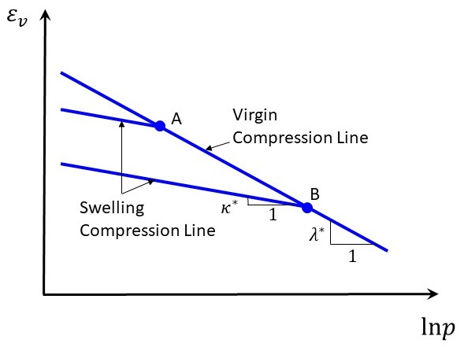
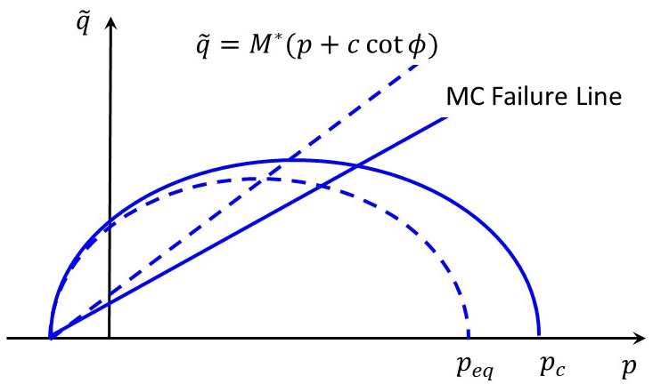

Soft-Soil 模型*
注意
*本模型仅在 FLAC3D 中提供。
软土一般指正常固结或轻微超固结的黏土、粉质黏土、黏质粉土与泥炭。显著压缩（例如 \(E^{ref}_{oed} < 0.5 E^{ref}_{50}\)）是软土的主要工程特性之一。软土（SS）模型具有以下特性：(a) 模量随压力变化；(b) 卸载-再加载与原始加载不同；(c) 体积屈服椭圆帽盖扩展；(d) 常规 Mohr-Coulomb 剪切破坏与拉伸破坏准则。
SS 模型中原始压缩假定如下关系
其中 \(\Delta \epsilon_v\) 为体积应变增量，\(\Delta p\) 为平均压力增量，材料参数 \(c\) 与 \(\phi\) 分别为土体的黏聚力与摩擦角。材料参数 \(\lambda^*\) 为修正压缩指数。
卸载与再加载压缩假定
其中 \(\Delta \epsilon^e_v\) 为弹性体积应变增量，材料参数 \(\kappa^*\) 为修正回弹指数。公式 (2) 表明弹性体积模量随压力变化，其形式为
需注意材料参数 \(\lambda^*\) 与 \(\kappa^*\)（以上标星号表示“修正”）基于体积应变增量（图 1（Figure 1））；它们不同于修正 Cam-Clay 模型所用、基于孔隙比增量的材料参数 \(\lambda\) 与 \(\kappa\)。


图 1：体积应变 \(\epsilon_v^p\) 与有效平均压力 \(p\) 之间的关系。
模型假定泊松比 \(\nu\) 为常数，故弹性剪切模量为
先期固结压力（即帽盖压力）\(p_c\) 是土体经历过的最大压力水平。在原始（初次）加载过程中，\(p_c\) 随应力水平增大并引起塑性（不可恢复）体积应变。由公式 (1) 与 (2) 并结合 \(\Delta \epsilon_v = \Delta \epsilon^e_v + \Delta \epsilon^p_v\)，可推得
SS 模型的屈服面是 \((p,\tilde{q})\) 平面中的一个椭圆（图 1（Figure 1）），表示为
其中等效压力定义为
以及 \(p=-(\sigma_1+\sigma_2+\sigma_3)/3\)、\(\tilde{q}=-[\sigma_1+(\delta-1)\sigma_2-\delta\sigma_3]\)，其中 \(\sigma_1\)、\(\sigma_2\) 与 \(\sigma_3\) 为按 \(\sigma_1 \leq \sigma_2 \leq \sigma_3\) 排序的有效主应力，\(\delta=(3+\sin{\phi})/(3-\sin{\phi})\) 与 \(M\) 确定屈服函数（公式 (6)）所定义椭圆半径之比。此处 \(M\) 不同于修正 Cam-Clay 模型中 \(6\sin{\phi}/(3-\sin{\phi})\) 的取值。相反，\(M\) 不是输入的物性参数，而是由其他物性参数按以下关系内部确定（Brinkgreve，1994）
其中 \(K_{nc}\) 为正常固结条件下的侧向土压力系数，用户可输入取值，若未赋值则默认为 \(K_{nc} = 1 - \sin{\phi}\)。


图 2：Soft-Soil 模型在 \((p, \tilde{q})\) 平面中的屈服面与破坏面。
SS 模型对体积演化采用关联流动法则，因此体积塑性的势函数 \(g\) 与公式 (6) 中的屈服函数相同
SS 模型也采用常规 Mohr-Coulomb 剪切破坏与拉伸破坏准则。弹性域在 \((p,\tilde{q})\) 平面中由体积屈服椭圆、Mohr-Coulomb 剪切破坏线与拉伸破坏线界定。
若需考虑次固结的蠕变效应，建议采用 Soft-Soil-Creep 模型（Soft-Soil-Creep model）。
参考文献
Brinkgreve, R.B.J. Geomaterial models and numerical analysis of softening. Ph.D. Thesis. Univ., Delft, Netherlands (1994).
soft-soil 模型性质
用以下关键字配合 设置网格单元属性（zone property） 命令设置 Soft-Soil 模型的这些性质。
- soft-soil
- friction f
摩擦角 \(\phi\)。默认值为 30 [度]。建议输入临界状态摩擦角，而非小应变下的更高值。不允许输入零值。
- kappa-modified f
修正回弹指数，即弹性回弹线斜率 \(\kappa^*=\kappa/(1+e)\)，其中 \(\kappa\) 为 Cam-Clay 模型中的回弹指数，\(e\) 可近似取回弹路径中的初始或平均孔隙比；或 \(\kappa^* \approx [(1+2K_0)(1-\nu)/(1+\nu)] C_s/[(\ln{10})(1+e)]\)，其中 \(C_s\) 为一维回弹指数，\(\nu\) 为泊松比，\(K_0\) 为静止土压力系数。\(C_s\) 的典型值为 \(C_s \approx (1/5) \sim (1/10) C_c\)，较好的估计为 \(C_s \approx PI(\%)/370\)。
- lambda-modified f
修正压缩指数，即弹性压缩线斜率 \(\lambda^*=\lambda/(1+e)\)，其中 \(\lambda\) 为 Cam-Clay 模型中的压缩指数，\(e\) 可近似取压缩路径中的初始或平均孔隙比；或 \(\lambda^*=C_c/[(\ln{10})(1+e)]\)，其中 \(C_c\) 为一维压缩指数。正常固结黏土的 \(C_c\) 典型值可估算（Terzaghi 与 Peck 1967）为 \(C_c=0.009(LL-100)\)，其中 \(LL\) 为液限。基于修正 Cam-Clay 模型可估计 \(C_c \approx PI(\%)/74\)，其中 \(PI\) 为塑性指数。
- poisson f
泊松比 \(\nu\)。默认值为 0.15。
- stress-1-effective f
初始最小有效主应力 \(\sigma^0_1\)。仅用于计算初始模量，赋值后不再更新。
- stress-2-e f
初始中值有效主应力 \(\sigma^0_2\)。仅用于计算初始模量，赋值后不再更新。
- stress-3-effective f
初始最大有效主应力 \(\sigma^0_3\)。仅用于计算初始模量，赋值后不再更新。
- coefficient-normally-consolidation f (a)
正常固结系数 \(K_{nc}\)。不允许小于 \(\nu / (1-\nu)\)，常用范围为 0.5 到 0.7。默认为 \(K_{nc} = 1 - \sin \phi\)。
- cohesion f (a)
有效黏聚力 \(c\)。默认值为 0。请记住该模型主要适用于正常固结或轻微超固结的软土，因此 \(c\) 应为零或较小值，取大值可能不切实际。
- dilation f (a)
剪胀角 \(\psi\)。默认值为 0 [度]。零剪胀角是 SS 模型的标准设置。
- over-consolidation-ratio f (a)
超固结比 \(OCR\)。默认为 1.0，对应正常固结土。所输入的 \(OCR\) 将用于确定初始帽盖压力，使 \(p_{c}^0=OCR \times p_{eq}^0\)。计算过程中 \(OCR\) 会更新。
- pressure-cutoff f (a)
帽盖压力的截止压力 \(p_{cut}\)。默认值为 1.0（模型所用应力单位）。这是帽盖压力的下界。模型中实际使用的最小帽盖压力为 \(max(p_{cut}, c\cot{\phi})\)。
- tension f (a)
抗拉强度 \(\sigma^t\)。默认值为 0，适用于大多数情形。
- bulk f (r)
当前弹性体积模量，\(K\)
- pressure-cap f (r)
当前帽盖（表观先期固结）压力 \(p_c\)
- pressure-effective f (r)
当前有效压力 \(p\)
- pressure-equivalent f (r)
当前等效压力 \(p_{eq}\)
- ratio-radius f (r)
当前弹性剪切模量 \(M\)，在内部计算。
- shear f (r)
当前弹性剪切模量 \(G\)
- strain-volume-plastic f (r)
累积塑性体积应变 \(\epsilon_v^p\)
- stress-deviatoric-equivalent f (r)
当前等效偏应力 \(\tilde{q}\)
- void f (r)
当前孔隙比 \(e\)
图例
- (a) 高级属性。
- 该属性具有默认值；在较简单的模型应用中，无需专门赋值。
- (r) 只读属性。
- 该属性不能由用户设置，但可以列出、绘图显示，或通过 FISH 访问。
| 这些内容对您有帮助吗？… 版权与免责声明 | FLAC3D © 2019, Itasca | 原文更新于 2020 年 10 月 8 日 |